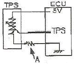
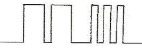

자동차정비기능사 (2010-01-31 기출문제)
1과목: 자동차공학
1. 가솔린의 성분 중 이소옥탄이 80%이고, 노말헵탄이 20% 일 때 옥탄가는?
- 80
- 70
- 40
- 20
(정답률: 90%)

2. 전자제어 기관의 연료분사 제어방식 중 점화순서에 따라 순차적으로 분사되는 방식은?
- 동시분사 방식
- 그룹분사 방식
- 독립분사 방식
- 간헐분사 방식
(정답률: 75%)
3. SPI(Single Point Injection)방식의 연료분사 장치에서 인젝터가 설치되는 가장 적절한 위치는?
- 흡입 밸브의 앞쪽
- 연소실 중앙
- 서지탱크(Surge Tank)
- 스로틀밸브(Throttle Valve) 전(前)
(정답률: 54%)
4. 디젤기관의 분사노즐에 대한 시험항목이 아닌 것은?
- 연료의 분사량
- 연료의 분사각도
- 연료의 분무상태
- 연료의 분사압력
(정답률: 49%)
5. 그림은 TPS 회로이다. 점 A에 접속이 불량할 때 이에 대한 스로틀 포지션 센서(TPS)의 출력전압을 측정 시 올바른 것은?

- TPS 값이 밸브 개도에 따라 가변되지 않는다.
- TPS 값이 항상 기준보다 조금은 낮게 나온다.
- TPS 값이 항상 기준보다 높게 나온다.
- TPS 값이 항상 5V로 나오게 된다.
(정답률: 48%)
6. 기관 작동 중 냉각수의 온도가 83℃를 나타낼 때 절대 온도는?
- 563 K
- 456 K
- 356 K
- 263 K
(정답률: 71%)
7. 칼만와류식 에어플로우 센서의 설치 위치로 가장 적합한 곳은?
- 흡기다기관 내
- 서지탱크 내
- 에어클리너 내
- 실린더 헤드 내
(정답률: 55%)
8. 실린더의 수가 4인 4행정 기관의 점화순서가 1-2-4-3일 때 3번 실린더가 압축행정을 할 때 1번 실린더는 어떤 행정을 하는가?
- 흡입행정
- 압축행정
- 동력행정
- 배기행정
(정답률: 65%)
9. 자동차 엔진오일을 점검해보니 우유색처럼 보였을 때의 원인으로 가장 적절한 것은?
- 노킹이 발생하였다.
- 가솔린이 유입되었다.
- 교환시기가 지나서 오염된 것이다.
- 냉각수가 섞여 있다.
(정답률: 83%)
10. 자동차가 200m를 통과하는데 10초 걸렸다면 이 자동차의 속도는?
- 68 km/h
- 72 km/h
- 86 km/h
- 92 km/h
(정답률: 74%)
11. 질크니아 산소센서(O2Sensor)에 대한 설명으로 맞는 것은?
- 산소센서는 농후한 혼합기가 흡입될 때 0 ~ 5V의 기전력이 발생한다.
- 산소센서는 흡기 다기관에 부착되어 산소의 농도를 감지한다.
- 산소센서는 최고 1V의 기전력을 발생한다.
- 산소센서는 배기가스 중의 산소농도를 감지하여 NOx를 줄일 목적으로 설치한다.
(정답률: 48%)
12. 자동차 접지부분 이외의 부분은 지면과의 사이에 최소 몇 cm 이상 간격이 있어야 하는가?
- 12
- 15
- 20
- 25
(정답률: 52%)
13. LP가스를 사용하는 자동차에서 차량전복으로 인하여 파이프가 손상시 용기 내 LP 가스 연료를 차단하기 위한 역할을 하는 것은?
- 영구자석
- 과류방지 밸브
- 첵 밸브
- 감압 밸브
(정답률: 61%)
14. 어느 가솔린기관의 제동 연료 소비율이 250g/PSh 이다. 제동 열효율은 약 몇 % 인가?(단, 연료의 저위 발열량은 1⑤00kcal/kg 이다.)
- 12.5
- 24.1
- 36.2
- 48.3
(정답률: 48%)
15. 실린더 연소실 체적이 50cc, 행정체적이 350cc 이면 이 기관의 압축비는?
- 2 : 1
- 4 : 1
- 6 : 1
- 8 :1
(정답률: 75%)
16. 실린더 헤드의 평면도 점검방법이다. 옳은 것은?
- 마이크로미터로 평면도를 측정 점검한다.
- 곧은자와 틈새게이지로 측정 점검한다.
- 실린더 헤드를 3개 방향으로 측정 점검한다.
- 틈새가 0.02mm이상이면 면삭한다.
(정답률: 80%)
17. 자동차 배출가스 중 탄화수소(HC)의 생성 원인과 무관한 것은?
- 농후한 연료로 인한 불완전 연소
- 화염전파 후 연소실 내의 냉각작용으로 타나 남은 혼합기
- 희박한 혼합기에서 점화 실화로 인한 원인
- 배기 머플러 불량
(정답률: 73%)
18. 센서의 장착위치가 다른 것은?
- 산소센서(O2)
- 흡기온도 센서(ATS)
- 흡입 공기량 센서(AFS)
- 스로틀 포지션 센서(TPS)
(정답률: 67%)
19. 디젤 노크의 방지대책으로 가장 거리가 먼 것은?
- 세탄가가 높은 연료를 사용한다.
- 실린더 벽의 온도를 높게 한다.
- 흡입공기의 온도를 낮게 유지한다.
- 압축비를 높게 한다.
(정답률: 61%)
20. 다음 중 기화기식과 비교한 MPI 연료분사 방식의 특징으로 잘못된 것은?
- 저속 또는 고속에서 토크 영역의 변화가 가능하다.
- 온ㆍ냉 시에도 최적의 성능을 보장한다.
- 설계시 체적효율의 최적화에 집중하여 흡기다기관 설계가 가능하다.
- 월 웨팅(wall wetting)에 따른 냉동시 특성은 큰 효과가 없다.
(정답률: 79%)
2과목: 자동차정비 및 안전기준
21. 디젤기관이 가솔린 기관에 비해 좋은 점은?
- 가속성이 좋다.
- 제작비가 적게 든다.
- 열효율이 높다.
- 운전이 정숙하다.
(정답률: 77%)
22. 배기가스 재순환(EGR) 장치에 관한 설명으로 틀린 것은?
- 연소 가스가 흡입되므로 엔진의 출력이 저하된다.
- 뜨거워진 연소가스를 재순환시켜 연소실 내의 연소 온도를 높여 유해가스 배출을 억제한다.
- 질소산화물(NOx)을 저감시키기 위한 장치이다.
- 엔진의 냉각수 온도가 낮을 때는 작동하지 않는다.
(정답률: 42%)
23. 자동차기관의 크랭크축 베어링에 대한 구비조건으로 틀린 것은?
- 하중 부담 능력이 있을 것
- 매입성이 있을 것
- 내식성이 있을 것
- 피로성이 있을 것
(정답률: 75%)
24. 클러치가 미끄러지는 원인 중 틀린 것은?
- 마찰 면의 경화, 오일 부착
- 페달 자유 간극 과대
- 클러치 압력스프링 쇠약, 절손
- 압력 판 및 플라이 휠 손상
(정답률: 73%)
25. 정의 캠버란 다음 중 어떤 것을 말하는가?
- 바퀴의 아래쪽이 위쪽 보다 좁은 것을 말한다.
- 앞바퀴의 앞쪽이 뒤쪽보다 좁은 것을 말한다.
- 앞바퀴의 킹핀이 뒤쪽으로 기우어진 각을 말한다.
- 앞바퀴의 위쪽이 아래쪽 보다 좁은 것을 말한다.
(정답률: 57%)
26. 기관 회전수 2000rpm, 변속기 변속비 2:1(감속), 증감속비 3:1, 타이어 지름 50cm일 때 자동차의 속도는?
- 약 31km/h
- 약 41km/h
- 약 51km/h
- 약 61km/h
(정답률: 29%)
27. 전자제어 현가장치의 주요 부품과 관계가 먼 것은?
- 컴프레셔
- 솔레노이드 밸브
- 차고 센서
- 부스터와 스프링
(정답률: 48%)
28. 디스크 브레이크에 대한 설명으로 맞는 것은?
- 드럼 브레이크에 비하여 브레이크의 평형이 좋다.
- 드럼 브레이크에 비하여 한쪽만 브레이크 되는 일이 많다.
- 드럼 브레이크에 비하여 베이퍼록이 일어나기 쉽다.
- 드럼 브레이크에 비하여 페이트 현상이 일어나기 쉽다.
(정답률: 68%)
29. 자동차 주행 중 가속페달 작동에 따라 출력전압의 변화가 일어나는 센서는?
- 공기온도센서
- 수온센서
- 유온센서
- 스로틀 포지션센서
(정답률: 81%)
30. 국내 승용차에 가장 많이 사용되는 현가장치로서 구조가 간단하고 스트러트가 조향시 회전하는 것은?
- 위시븐형
- 맥퍼슨형
- SLA형
- 데디온형
(정답률: 68%)
31. 전자제어 현가장치에서 자동차 전방에 있는 노면의 돌기 및 단자를 검출하는 제어는?
- 안티록제어
- 스카이훅제어
- 퍼지제어
- 프리뷰제어
(정답률: 55%)
32. 4륜 조향장치(4WS)의 적용 효과에 해당되지 않는 것은?
- 저속에서 선회할 때 최소 회전 반지름이 증가한다.
- 차로 변경이 쉽다.
- 주차 및 일렬주차가 편리하다.
- 고속 직진 성능이 향상된다.
(정답률: 60%)
33. 차축에서 1/2, 하우징이 1/2정도의 하중을 지지하는 차축 형식은?
- 전부동식
- 반부동식
- 3/4 부동식
- 독립식
(정답률: 73%)
34. 수동변속기에서 가장 큰 토크를 발생하는 변속단은?
- 오버드라이브 단에서
- 1단에서
- 2단에서
- 직결 단에서
(정답률: 78%)
35. 전자제어 동력조향장치(electronic power steering) 유량제어방식을 설명한 것으로 맞는 것은?
- 동력실린더에 의해 유로를 통과하는 유압유를 제거하거나 바이패스 시켜 제어밸브의 피스톤에 가해지는 유압을 조절하는 방식
- 제어밸브의 열림 정도를 직접 조절하는 방식이며, 동력 실린더의 유압은 제어밸브의 열림 정도로 결정된다.
- 제어밸브에 의해 유로를 통과하는 유압유를 제한하거나 바이패스 시켜 동력실린더의 피스톤에 가해지는 유압을 조절하는 방식이다.
- 동력실린더의 열림 정도를 직접 조절하는 방식이며, 제어밸브에 유압은 제어밸브의 열림 정도로 결정된다.
(정답률: 54%)
36. 자동변속기 구성장치 중 오일펌프에서 공급되는 유압을 각부로 공급하는 유압회로를 형성하는 것은?
- 밸브바디
- 피드백 펌프
- 토크컨버터
- 유성기어
(정답률: 48%)
37. 제동장치에서 전진방향 주향시 자기작동이 되는 슈를 무엇이라 하는가?
- 서보슈
- 리딩슈
- 트레일링슈
- 역전슈
(정답률: 70%)
38. 토크 컨버터(torque converter)의 구성품으로 맞는 것은?
- 펌프, 터빈, 스테이터
- 런너, 오일펌프, 스테이터
- 유성기어, 펌프, 터빈
- 클러치, 브레이크, 탬퍼
(정답률: 75%)
39. ABS 차량에서 4센서 4채널방식의 설명으로 틀린 것은?
- ABS 작동시 각 휠의 제어는 별도로 제어된다.
- 휠속도센서는 각 바퀴마다 1개씩 설치된다.
- 톤휠의 회전에 의해 교류전압이 발생한다.
- 휠속도센서의 출력 주파수는 속도에 반비례한다.
(정답률: 71%)
40. 휠(WHELL)의 구성요소가 아닌 것은?
- 휠 허브
- 휠 디스크
- 트레드
- 림
(정답률: 70%)
3과목: 안전관리
41. 축전지를 과방전 상태로 오래 두면 못쓰게 되는 이유로 가장 타당한 것은?
- 극판에 수소가 형성된다.
- 극판이 산화납이 되기 때문이다.
- 극판이 영구 황상납이 되기 때문이다.
- 황상이 증류수가 되기 때문이다.
(정답률: 63%)
42. 힘을 받으면 기전력이 발생하는 반도체의 성질은?
- 펠티어 효과
- 피에조 효과
- 지백 효과
- 홀 효과
(정답률: 77%)
43. 자기진단 출력단자에서 전압변동을 시간대로 나타낸 아래 오실로스코프 파형의 코드 번호로 맞는 것은?

- 12
- 22
- 23
- 32
(정답률: 76%)
44. 일반 승용차에서 교류 발전기의 총전전압 범휘를 표시한 것 중 맞는 것은?(단 12V Battery의 경우 이다.)
- 10 ~ 12 V
- 13.8 ~ 14.8 V
- 23.8 ~ 24.8 V
- 33.8 ~ 34.8 V
(정답률: 62%)
45. 자동차 전기장치에 사용되는 퓨즈에 대한 설명으로 틀린 것은?
- 전기회로에 직렬로 설치된다.
- 단락 및 누전에 의해 과대 전류가 흐르면 차단되어 전류의 흐름을 방지한다.
- 재질은 알루미늄(25%) + 주석(13%) + 구리(50%) 등으로 구성된다.
- 회로에 합선이 되면 휴즈가 단선되어 전류의 흐름을 차단한다.
(정답률: 58%)
46. 공조시스템의 기본지식으로 물질의 상태변화를 나타낸 것중 틀린 것은?
- 융해(고체 -> 액체)
- 응고(액체 -> 고체)
- 용융(기체 -> 고체)
- 응축(기체 -> 액체)
(정답률: 65%)
47. 차량 시스템에 따라 다를 수 있으나 도난 경보장치 구성부품으로 가장 거리가 먼 것은?
- 도어 열림 스위치
- 트렁크 열림 스위치
- 후드 열림 스위치
- 오일 압력 스위치
(정답률: 85%)
48. 축전지의 전압이 12V이고 권선비가 1 : 40 인 경우 1차 유도 전압이 350V이면 2차 유도전압은?
- 7000V
- 12000V
- 13000V
- 14000V
(정답률: 55%)
49. 기동전동기에서 회전하는 부분은?
- 계자 코일
- 계철
- 전기자
- 솔레노이드
(정답률: 54%)
50. 빛의 세기에 따라 저항이 적어지는 반도체로 자동전조등 제어장치에 사용되는 반도체 소자는?
- 광량센서(CdS)
- 피에조 소자
- NTC 시미스터
- 발광다이오드
(정답률: 48%)
51. 다음 중 안전하게 공구를 취급하는 방법 중 틀린 것은?
- 공구를 사용한 후 제자리에 정리하여 둔다.
- 예리한 공구 등을 주머니에 넣고 작업을 하여서는 안된다.
- 사용 전에 손잡이에 묻은 기름 등은 닦아내어야 한다.
- 작업 중 공구를 타인에게 숙달된 자가 던져 전달하면 작업능률이 좋아진다.
(정답률: 87%)
52. 연삭작업 시 안전사항이 아닌 것은?
- 연삭숫돌 설치 전 해머로 가볍게 두들겨 균열여부를 확인해 본다.
- 연삭숫돌의 측면에 서서 연삭한다.
- 연삭기의 커버를 벗긴 채 사용하지 않는다.
- 연삭숫돌의 주위와 연삭 지지대 간의 간격은 5mm 이상으로 한다.
(정답률: 45%)
53. 연 100만 근로 시간당 몇 건의 재해가 발생했는가의 재해율 산출을 무엇이라 하는가?
- 연천일율
- 도수율
- 강도율
- 천인율
(정답률: 57%)
54. 소화 작업기 기본요소가 아닌 것은?
- 가연 물질을 제거한다.
- 산소를 차단한다.
- 점화원을 냉각시킨다.
- 연료를 기화시킨다.
(정답률: 79%)
55. 전동기구 및 전기기계의 안전 대책으로 잘못된 것은?
- 전기 기계류는 사용 장소와 환경에 적합한 형식으로 사용 하여야 한다.
- 운전, 보수 등을 위한 충분한 공간이 확보 되어야 한다.
- 리드선을 기계진동이 있을시 쉽게 끊어질 수 있어야 한다.
- 조작부는 작업자의 위치에서 쉽게 조작이 가능한 위치여야 한다.
(정답률: 83%)
56. 가솔린 엔진 조정불량으로 불완전 연소 했을 때 인체에 해로우며 가장 많이 발생하는 배출 가스는?
- H2 가스
- CO3 가스
- CO 가스
- CO2 가스
(정답률: 70%)
57. 정비작업시 지켜야 할 안전수칙 중 잘못된 것은?
- 작업에 맞는 공구를 사용한다.
- 작업장 바닥에는 오일을 떨어뜨리지 않는다.
- 전기장치 작업시 오일이 묻지 않도록 한다.
- 잭(Jack)을 사용하여 차체를 올린 후 손잡이를 그대로 두고 작업한다.
(정답률: 87%)
58. 자동차에 소음 및 작동 점검시 운전(작동) 상태에서 점검해야 할 사항이 아닌 것은?
- 클러치 작동 상태
- 기어 부분의 이상음
- 기어의 급유 상태
- 베어링 작동부 온도상승 여부
(정답률: 64%)
59. 감전 위험이 있은 곳에 전기를 차단하여 수선점검을 할 때의 조치와 관계가 없는 것은?
- 스위치 박스에 통전장치를 한다.
- 위험에 대한 방지장치를 한다.
- 스위치에 안전장치를 한다.
- 필요한 곳에 통전금지 기간에 관한 사상을 게시한다.
(정답률: 62%)
60. 축전지의 용량을 시험할 때 안전 및 주의사항으로 틀린 것은?
- 축전지 전해액이 옷에 묻지 않게 한다.
- 기름이 묻은 손으로 시험기를 조작하지 않는다.
- 부하시험에서 부하시간을 15초 이상으로 하지 않는다.
- 부하시험에서 부하전류는 축전지의 용량에 관계없이 일정하게 한다.
(정답률: 81%)